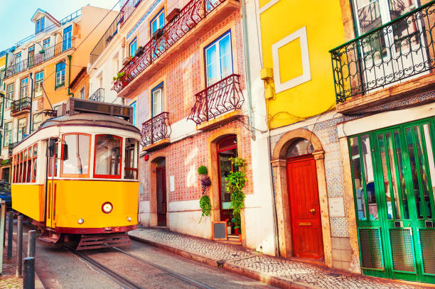
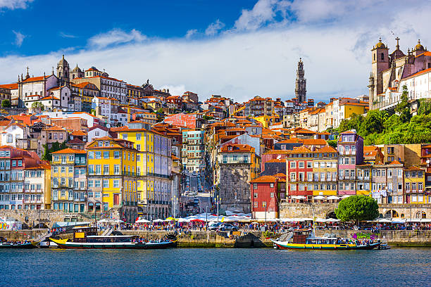
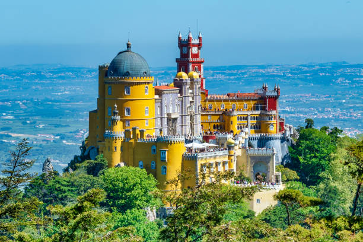
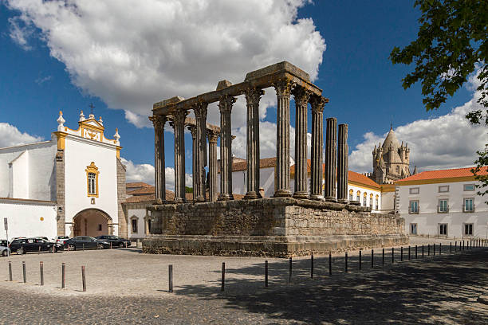
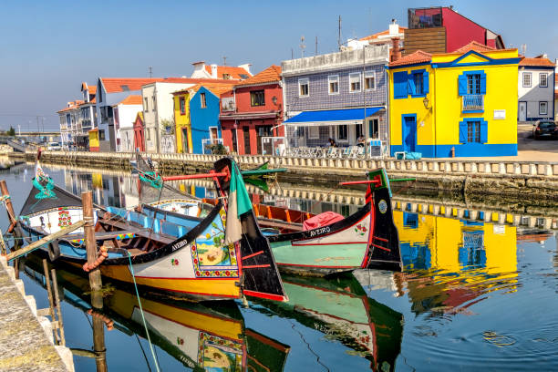
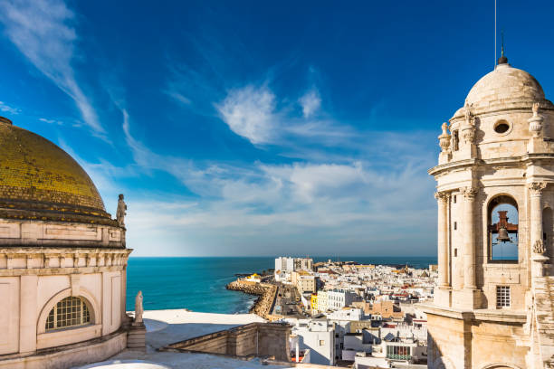
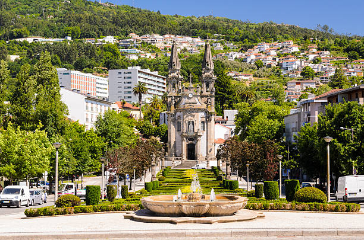
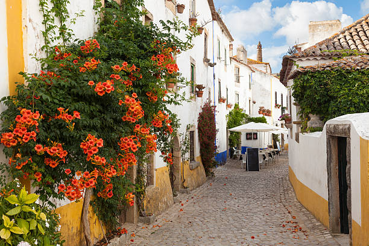
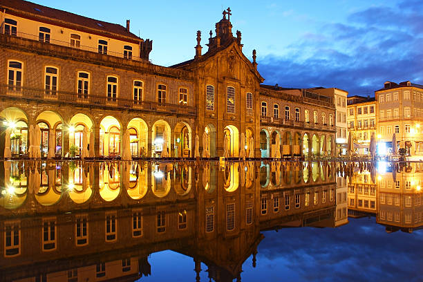

Introduction
Vous rêvez de partir dans un pays diversifié et fascinant? Le Portugal est fait pour vous. Ce pays, petit par sa taille, est grand par sa culture, son histoire et ses paysages. En effet, là-bas vous pouvez trouver des villes dynamiques, de superbes plages et une météo incroyable. Mais dans quelles villes se rendre, là est la question? Ce site vous montre les 10 plus belles villes à visiter lors d’un voyage au Portugal.
Lisbonne
La capitale portugaise a tout pour plaire ! Surnommée la ville aux sept collines,Lisbonne a de nombreux atouts : une situation idéale au bord de la mer, une richesse culturelle exceptionnelle, des petites rues pavées très photogéniques mais aussi une gastronomie riche et variée. Prenez le temps de déguster une Pasteis de nata , un incontournable de la pâtisserie portugaise.
Découvrir LisbonnePorto
Une promenade au bord du fleuve Douro suffira à vous convaincre que Porto est une ville diablement attirante. Prenez le temps de flâner à Porto dans la très belle librairie Lello, assurément l’une des plus splendides du monde. Mais Porto est aussi la ville de la gastronomie et entre visites de caves de Porto et dégustation de spécialités locales, vous serez comblés !
Découvrir PortoSintra
Des palais exubérants, des châteaux en pierre, des falaises accidentées dominant un océan tumultueux…Sintra semble tout droit sortie d’un conte de fées. Elle est souvent considérée comme une excursion d’une journée à faire lors d’un séjour à Lisbonne. En effet, Sintra est une ville unique en son genre qu’il ne faut pas manquer pour saisir toute la complexité du Portugal.
Découvrir SintraAzenhas do Mar

Azenhas do Mar est une charmante petite ville balnéaire appartenant à la municipalité de Sintra. A seulement 40 minutes de Lisbonne vous goûterez à la douceur de vivre à la portugaise dans ce joli village de pêcheurs construit en haut d’une falaise. La vue sur l’océan est superbe et les petits restaurants servant des spécialités de la région.
Découvrir Azenhas do MarEvora
C’est une ville splendide qui se trouve dans la région aride d’Alentejo. Elle est connue pour son Temple Romain conservé ainsi que pour sa chapelle au os, mais elle cache de magnifiques monuments qui témoignent de son importance passée en tant que ville commerciale. Il faut cependant fait attention à la chaleur étouffante de cette ville médiévale.
Découvrir EvoraAveiro
Surnommée la Venise portugaise, Aveiro est une cité balnéaire très agréable située à 70 km au sud de Porto. Avec ses façades en azulejos, ces carreaux de faïence ornés caractéristiques du Portugal, ses nombreux canaux et ses petits restaurants au bord de l’eau, Aveiro est parfaite pour une journée de détente.
Découvrir AveiroTavira
Alors que beaucoup de villes d’Algarve ont succombé au tourisme de masse, Tavira conserve son charme typiquement portugais. Cette ville se trouve à l’Est de l’Algarve, et était auparavant une plateforme commerçante avant de devenir un des ports principaux. Nous retrouvons cette histoire le long de ses rues pavées et ses petites places où l’on peut voir les anciennes structures défensives de la ville.
Découvrir TaviraGuimarāes
Située à une quarantaine de kilomètres au nord de Porto, la ville de Guimarães est l’une des plus importantes du Portugal sur le plan historique. C’est en effet ici que naquit Alphonse Henriques, le premier roi du pays. Son centre historique est classé au patrimoine mondial de l’Unesco et la richesse de son patrimoine est exceptionnelle.
Découvrir GuimarāesObidos
Ce très joli village entouré de fortifications est interdit aux voitures, idéal donc pour se promener et profiter de son charme pittoresque. N’oubliez pas de grimper dans la tour d’Obidos pour jouir d’une vue imprenable sur les environs. À proximité de Lisbonne, vous pouvez y passer quelques heures reposantes
Découvrir ObidosBraga
Braga, fondée par les Romains il y a plus de 2000 ans, est la troisième ville du Portugal. Elle offre de très nombreuses possibilités de visites et son centre historique est l’un des plus beaux du pays. Les amateurs d’églises seront comblés, Braga en possède tellement qu’on la surnomme la Rome portugaise.
Découvrir Braga